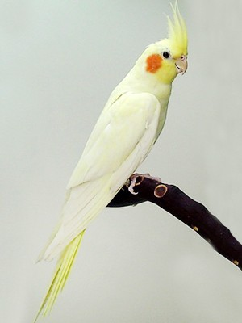
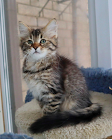

Favorites
TV shows/movies
I have a lot of favorite TV shows and movies. I like original movies like Lion King and old TV Shows like Austin Ally, Jesse, . I also like new shows and movies such as that new movie named Cruella, The Conjuring, etc. Also some of the shows I like is Friends, Gilmore Girls, Criminals Minds, and so on.
Food
I have lots of favorite foods. I like many different cusinies. I like Indian, Turkish, Mediterranean, Italian, Chinese, etc.
Pets
I have two pets. A bird and a cat. The bird's name is Pikachu and he is a cockatiel. The cats name is Ivy ad she is purbred siberian cat. Here is a picture if them both:
